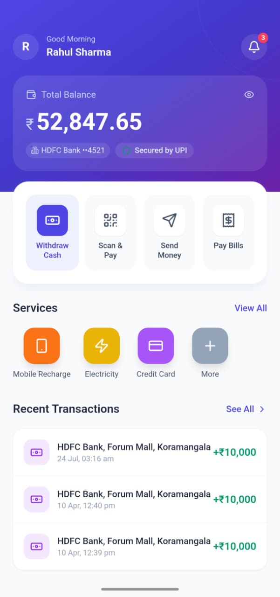
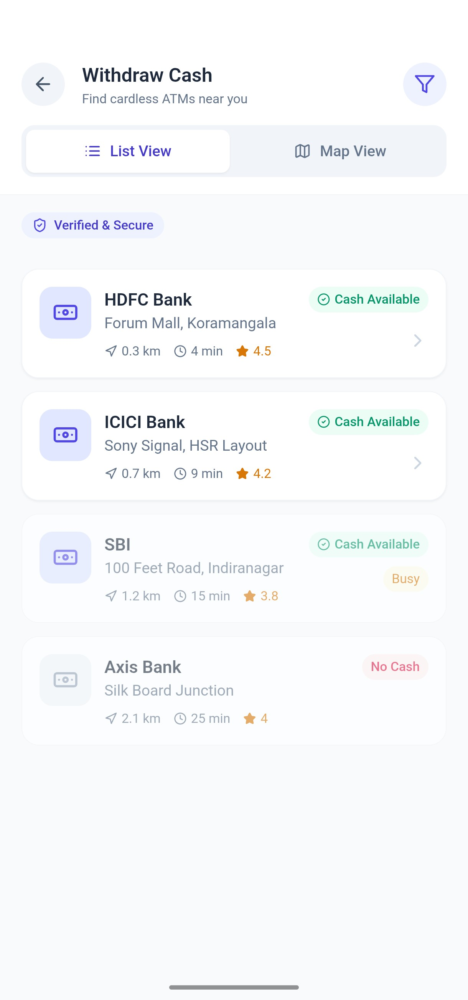
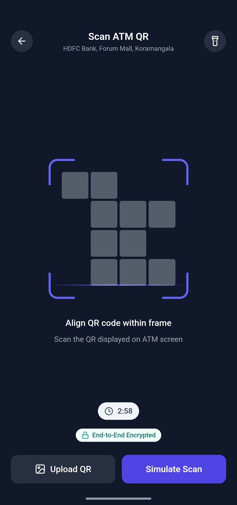
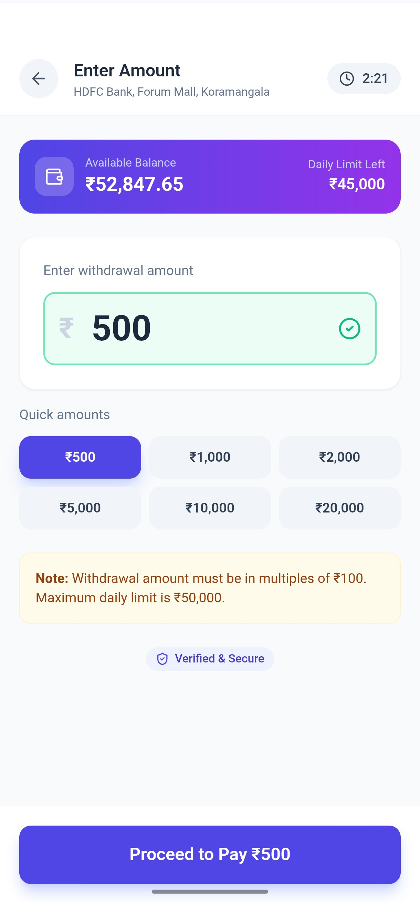
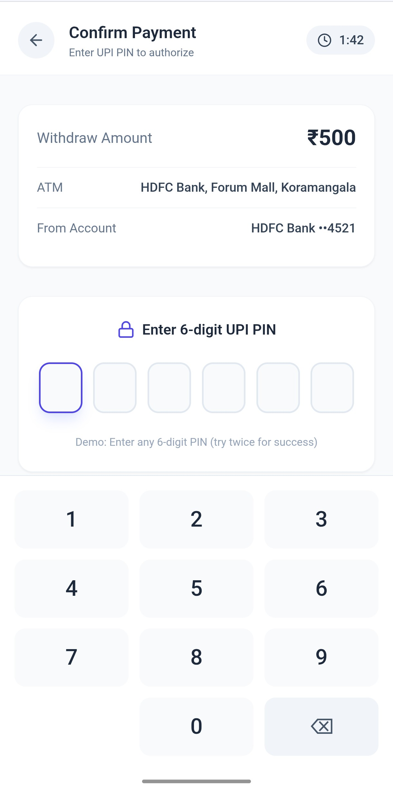
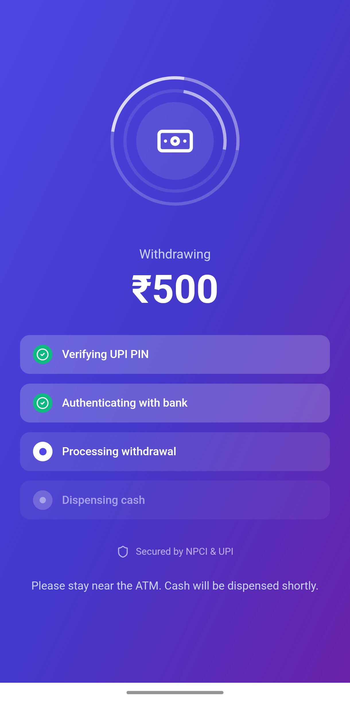
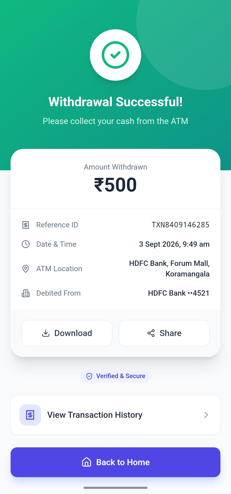
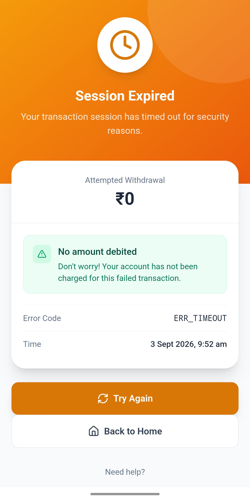
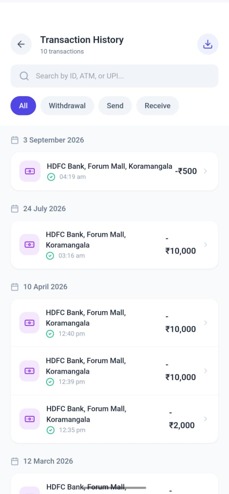

A mobile-first ATM withdrawal experience that lets people withdraw cash from nearby ATMs using their UPI app — without carrying a debit card.
View live prototype ↗QuickCash explores a simple question: if people already use UPI on their phones every day, can getting physical cash be just as effortless?
The concept connects the user's phone, a nearby ATM and a secure UPI payment flow. The experience is intentionally broken into clear, focused steps so the user always knows what happens next.
Locate a nearby compatible ATM before starting the withdrawal.
Use the ATM's QR interaction to connect the physical ATM with the phone.
Select an amount, authenticate securely and receive a clear transaction result.
Traditional ATM withdrawal assumes the user has a physical debit card. QuickCash removes that dependency and makes the phone the starting point.
Design challenge
Design a cardless withdrawal flow that feels familiar, secure and fast — while bridging a digital UPI interaction with a physical ATM.
Keep the withdrawal journey short and focused on the user's immediate task.
Use strong hierarchy, explicit states and familiar authentication patterns.
Make the relationship between ATM, QR, UPI and transaction status easy to understand.
The prototype is structured around a simple sequence with explicit success and failure states.
Why this structure?
Each screen represents one decision or system state. This reduces cognitive load and makes error recovery easier to design.
The user starts from a clear home experience and finds an ATM through the locator.
The QR and UPI PIN steps create a deliberate security checkpoint before cash is released.
Processing, success and failure states make the transaction outcome unambiguous.
The live prototype currently includes dedicated screens for the ATM locator, QR scanner, amount selection, UPI PIN, processing, success, failure and transaction history.









A financial interaction cannot stop at the happy path. QuickCash explicitly models processing, success and failure so the user can understand whether money has actually been dispensed.
Clearly confirms completion and provides a natural path toward transaction history.
Separates an unsuccessful transaction from the rest of the flow and gives the user a clear recovery direction.
“The strongest part of the concept is not removing the card — it is making every transition feel intentional enough that the user trusts what is happening to their money.”
This project helped explore the intersection of mobile UX, financial interactions and physical-world touchpoints. The next iteration would focus on usability testing, accessibility, real ATM constraints, network failures and edge cases around transaction reconciliation.